Every great adventure needs a great team.
Meet the people who make Hawkins unforgettable - from curious kids and unlikely heroes to the people who make you wish you
could jump through the screen and help them.
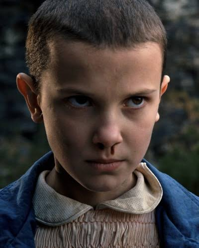
A girl with extraordinary psychic powers who discovers friendship and family while uncovering the secrets of her past.
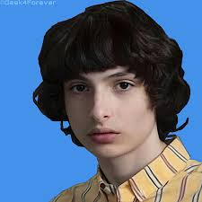
A loyal and determined friend who often helps bring the group together during their most difficult moments.
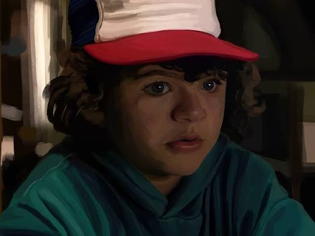
Funny, curious, and full of ideas, Dustin brings both brains and humour to the group. His love for science and adventure makes him an essential member of the party—and sometimes the one with the plan nobody else thought of.
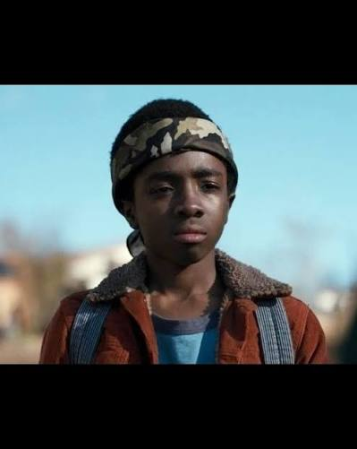
A brave and practical friend who questions the unknown but always stands up for the people he loves.
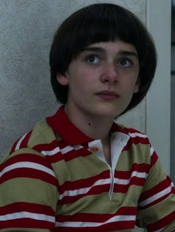
A sensitive and artistic boy whose mysterious disappearance sets the entire story in motion.
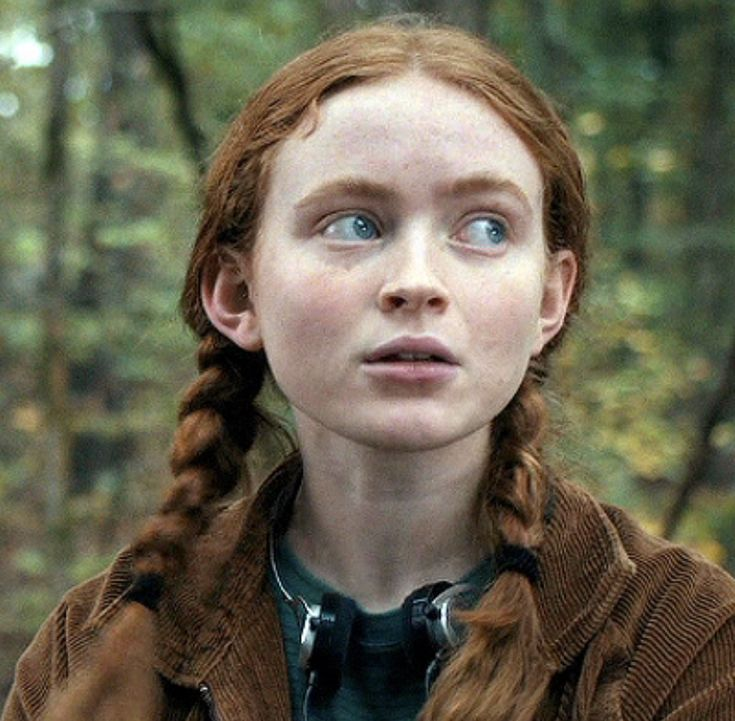
An independent and fearless skateboarder who becomes an important part of the group.
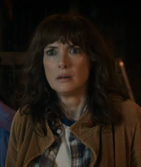
A determined mother who refuses to give up on her children, even when nobody believes her.
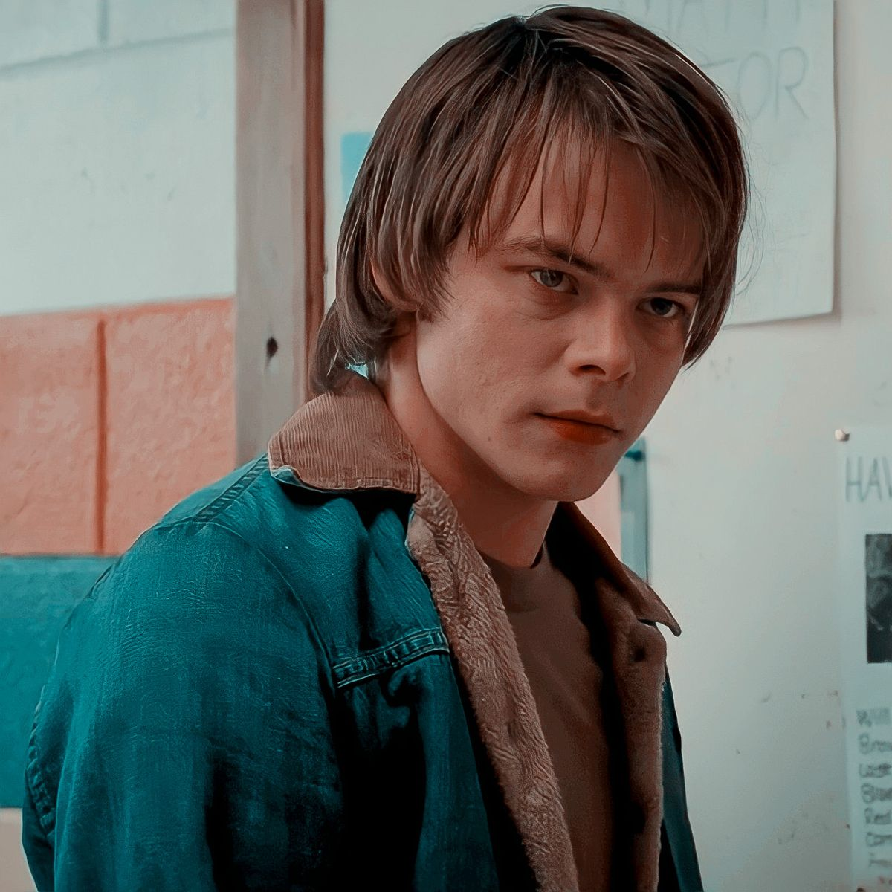
Will's protective older brother who is passionate about photography and deeply devoted to his family.
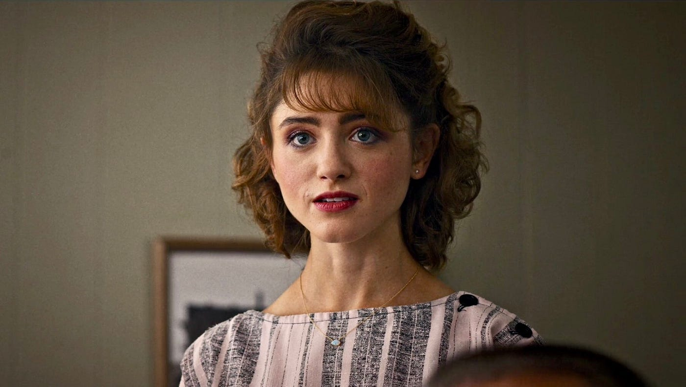
Intelligent, determined, and courageous, Nancy is not content to sit back while others solve the mystery. When something doesn't add up, she investigates - and she's willing to take serious risks to uncover the truth.
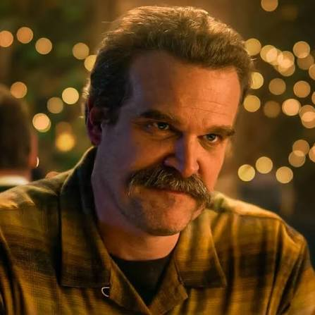
Hawkins' tough but caring police chief who risks everything to protect the people he loves.
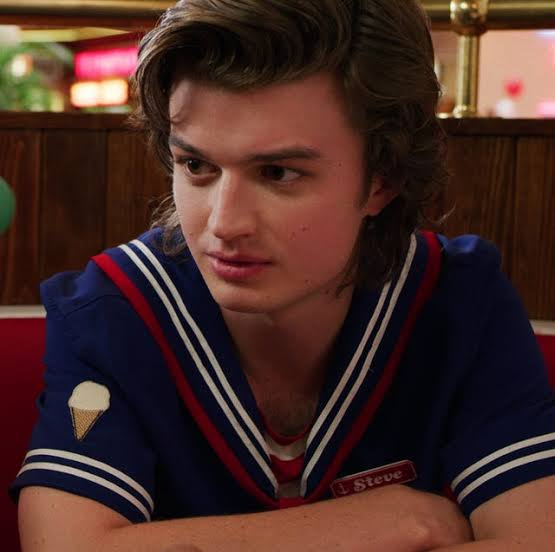
A former popular teenager who grows into a protective, dependable friend and an unlikely hero.
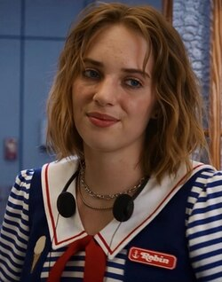
A witty and quick-thinking young woman whose intelligence and honesty make her a valuable ally.
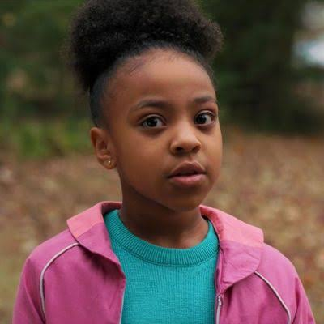
Lucas's younger sister is confident, sharp, and never afraid to speak her mind. With her intelligence and impressive Dungeons & Dragons skills, Erica proves that being underestimated can be a serious mistake.
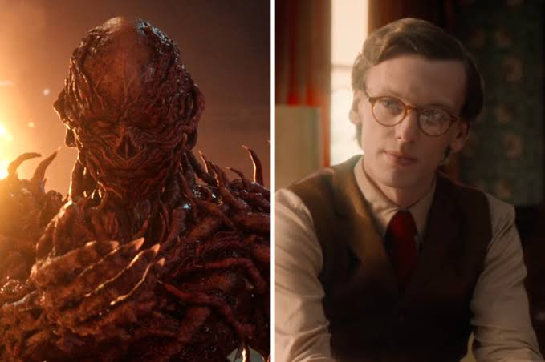
A terrifying presence connected to Hawkins' darkest mysteries, Vecna brings a new level of fear to the story. Patient, powerful, and deeply unsettling, he represents a threat the group cannot afford to underestimate.
He also played the role of One...hope I didn't spoil for anyone🤭.
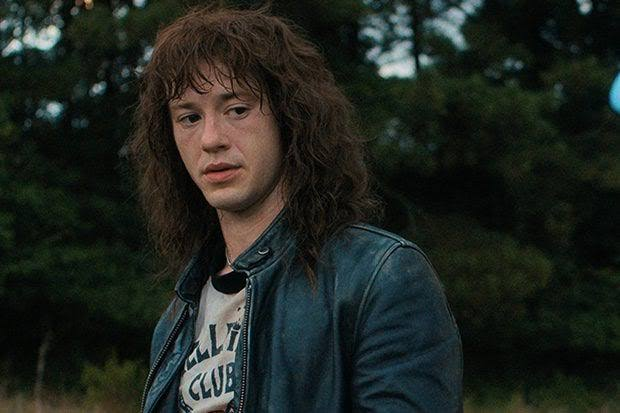
Metalhead, storyteller, and leader of Hawkins High's Hellfire Club, Eddie loves heavy metal and Dungeons & Dragons. Beneath his rebellious image is someone who cares deeply about his friends and refuses to let other people's opinions define him.
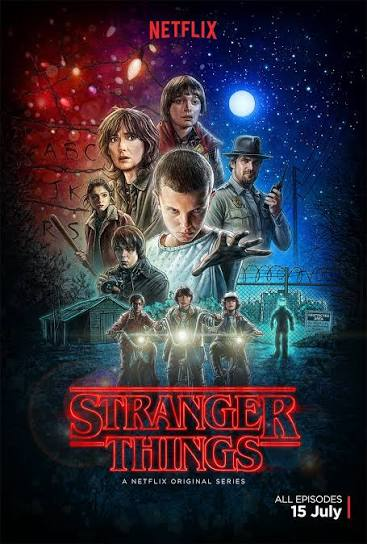
Will Byers disappears and his friends meet a mysterious girl named Eleven. Their search uncovers secrets hidden beneath Hawkins
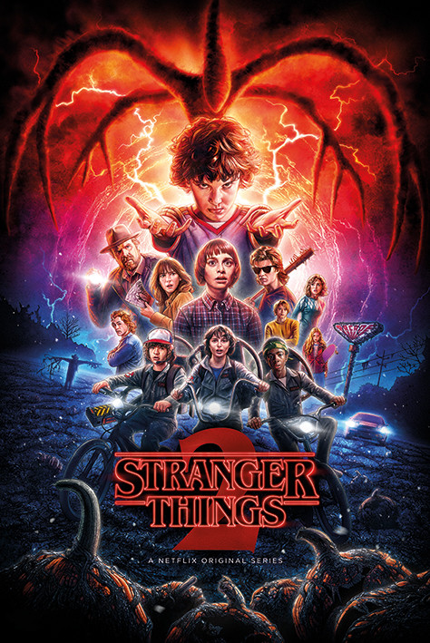
Will's strange experiences continue, and the group discovers that the danger may be much bigger than they thought.
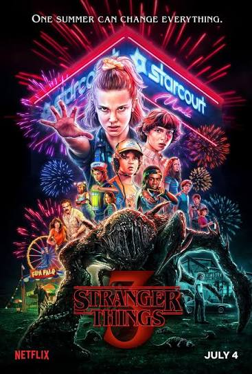
It's summer 1995. The new mall is buzzing, relationships are changing, and a dangerous secret lurks beneath the fun.
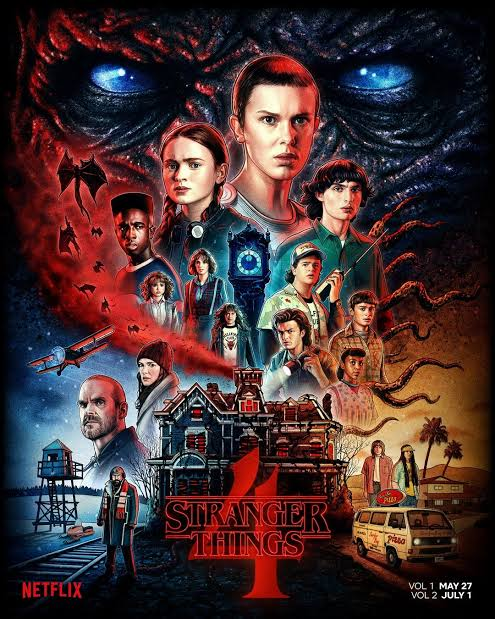
The friends are separated, Hawkins faces a terrifying new threat, and secrets from Eleven's past begin to matter more.
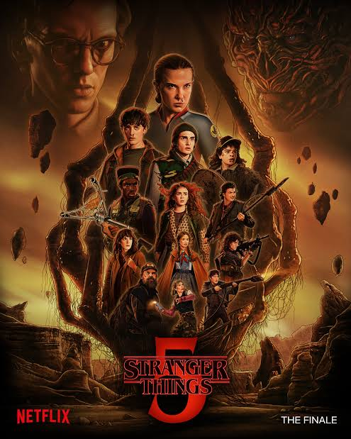
Hawkins faces the consequences of the past as the group reunites for its final confrotation with Vecna.
You've met the heroes, revisited the mysteries, and explored the seasons that made Hawkins unforgettable. But what's a great adventure without a party to call your own?
Every legend starts somewhere. Every party needs its players.